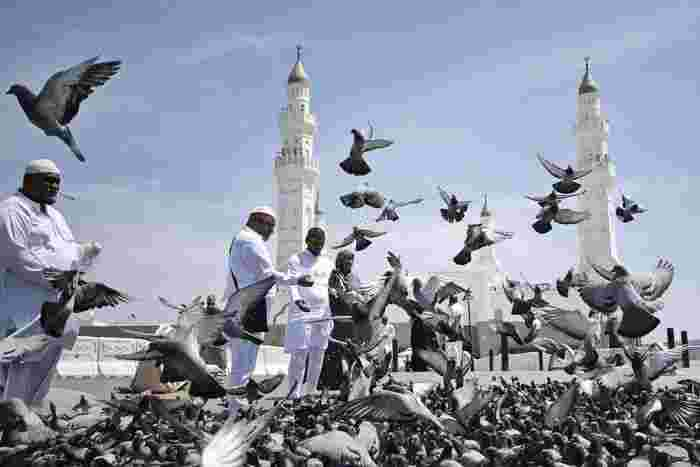

Madinah Kota Nabi Jadi Destinasi Utama Kawasan, Al Ula Diminati Wisman
Jakarta - Madinah kembali menegaskan posisinya sebagai kota suci pilihan wisatawan di kawasan ini. Berdasarkan laporan terbaru Madinah Chamber of Commerce, sekitar 73,7 persen wisatawan memilih Madinah sebagai destinasi utama mereka.
Sebagian besar wisatawan tertarik pengalaman ibadah dan hubungan historis yang mendalam dengan Nabi Muhammad SAW.
Dilansir dari Arab News, Senin (3/11/2025), indikator pariwisata menunjukkan bahwa Madinah berada di antara 100 destinasi global teratas dan menempati posisi ketujuh dunia dalam indeks kinerja pariwisata. Capaian ini mencerminkan status Madinah sebagai destinasi yang menggabungkan makna religius, daya tarik budaya, dan nilai ekonomi.
Selain Madinah, laporan tersebut mencatat beberapa destinasi lain yang menarik wisatawan:
Provinsi Al-Ula: 47,2 persen wisatawan mancanegara mengunjungi Al Ula untuk menikmati acara budaya, pengalaman sejarah, dan situs Warisan Dunia UNESCO.
Provinsi Yanbu: 14,1 persen wisatawan domestik memilih Yanbu karena keindahan pantai, layanan bahari, dan fasilitas rekreasi keluarga.
Data ini menunjukkan pertumbuhan pesat sektor pariwisata di wilayah Madinah, didukung oleh upaya terpadu sistem pariwisata nasional untuk meningkatkan kualitas destinasi wisata dan posisi Arab Saudi di kancah global, sejalan dengan Visi Saudi 2030.
Otoritas Pengembangan Wilayah Madinah mendapat apresiasi atas proyek pembangunan dan pariwisata berkualitas. Ahmad Al-Otaibi, warga Taif, mengatakan, "Madinah selalu dekat di hati kami. Tidak ada kota yang dapat menandingi suasana damai Madinah, penduduknya menjaga kota ini tetap hidup 24 jam dan 365 hari, namun suasananya tetap menenangkan."
Ia juga memuji peningkatan infrastruktur dan layanan sektor perhotelan, yang memberikan pengalaman wisata religi lebih nyaman bagi pengunjung dan meningkatkan kualitas hidup warga lokal.